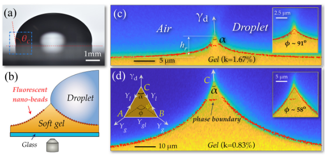
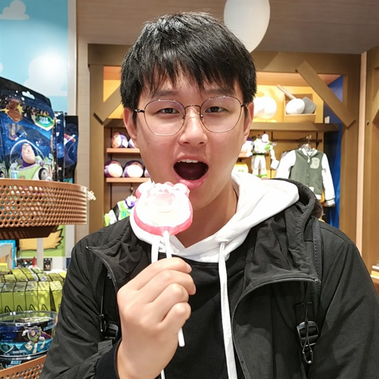
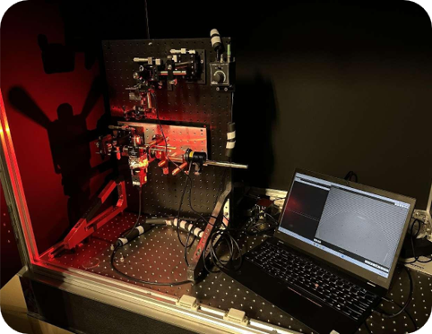
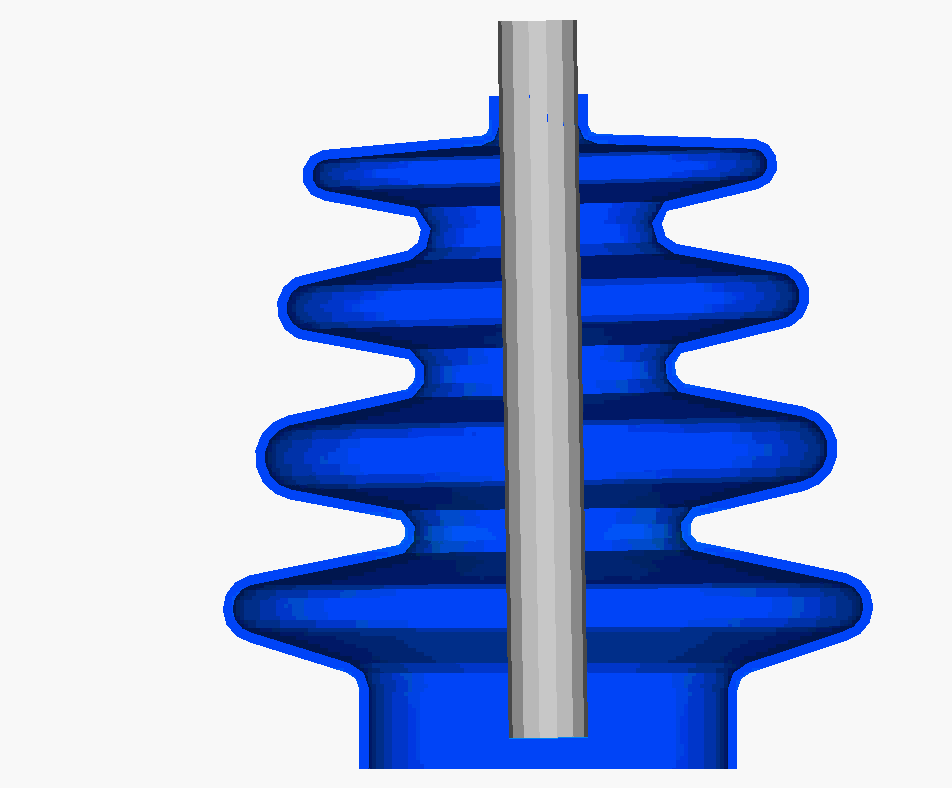
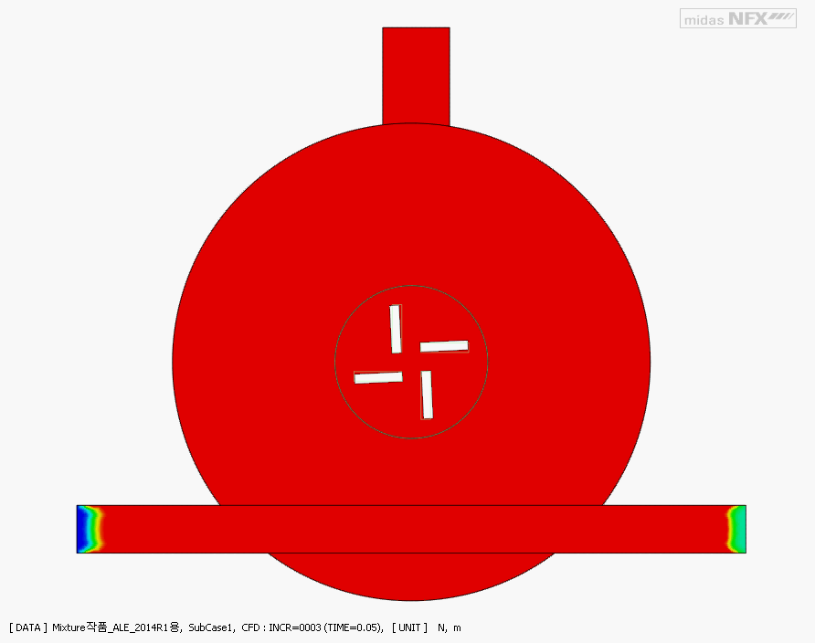

Soft-matter interfacial physics软物质界面物理
Wetting, adhesion, phase separation, and poroelastic transport at compliant polymer interfaces.柔性聚合物界面的润湿、黏附、相分离与多孔弹性输运。
Interfacial Mechanics · Soft Matter · Photomechanics界面力学 · 软物质物理 · 光测实验力学
My research examines how interfacial forces and molecular transport govern deformation, wetting, adhesion, and fracture in soft materials. Bridging experimental mechanics and soft-matter physics, I study the coupling between local interfacial processes and the mechanical response of polymer networks and coatings.
I combine quantitative optical measurements, continuum modelling, and numerical simulation to identify the mechanisms underlying these phenomena and develop physical descriptions grounded in experiment. My broader interests include applying this approach to material characterisation and engineering analysis.
我的研究聚焦于软材料中的界面力学，关注界面作用力与分子输运如何影响材料的变形、润湿、黏附和断裂。结合实验力学与软物质物理的研究背景，我致力于理解聚合物网络及涂层中局部界面过程与材料整体力学响应之间的耦合关系。
我将定量光学测量、连续介质力学建模与数值仿真相结合，揭示界面现象背后的物理机制，并建立具有实验依据的定量描述。在此基础上，进一步探索相关方法在材料表征与工程分析中的应用。


Wetting, adhesion, phase separation, and poroelastic transport at compliant polymer interfaces.柔性聚合物界面的润湿、黏附、相分离与多孔弹性输运。

Non-contact optical measurement of interfacial deformation, failure, and fracture from micro- to mesoscales.利用非接触式光学方法测量微观至介观尺度的界面变形、失效与断裂。


Finite-element, contact, fluid–structure, and mixture-flow simulations for experiments and engineering systems.面向实验验证与工程系统的有限元、接触、流固耦合和混合物流动分析。
Langmuir 42(31), 22623–22629.
Physics of Fluids 37, 042108.
Physical Review Research 6, 033210.